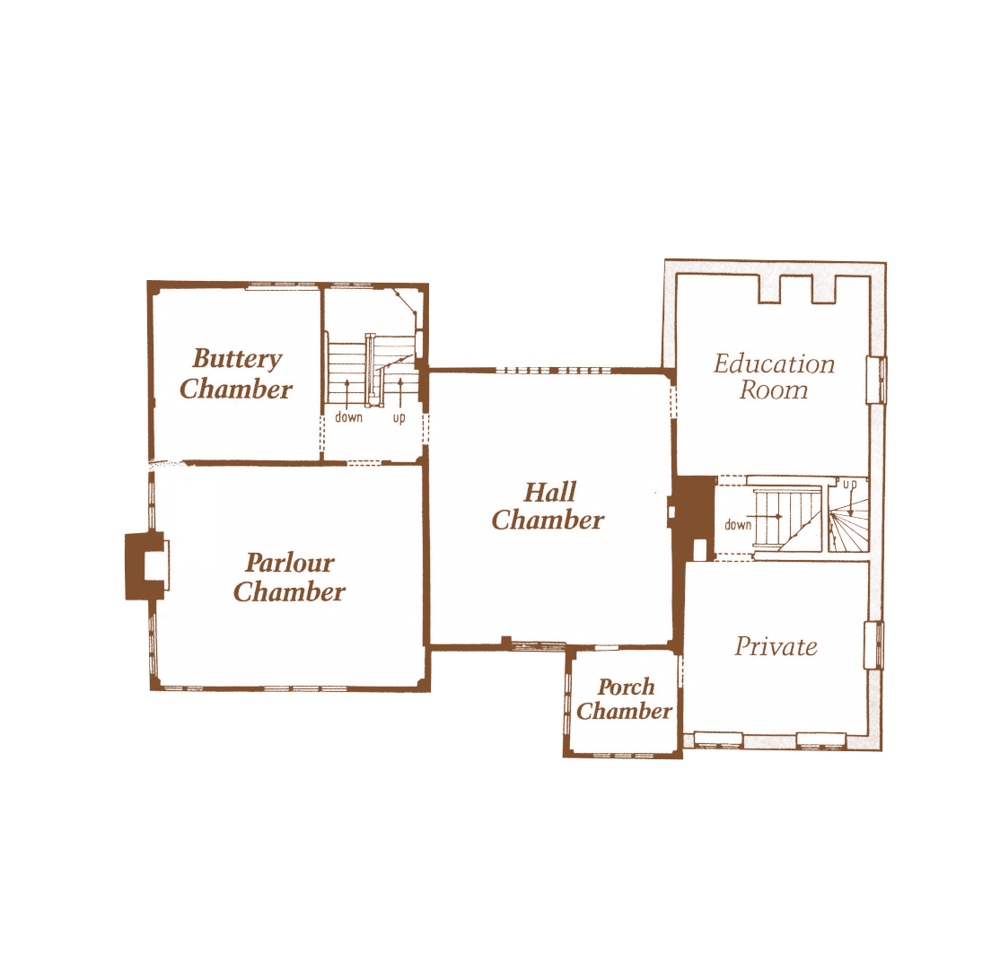
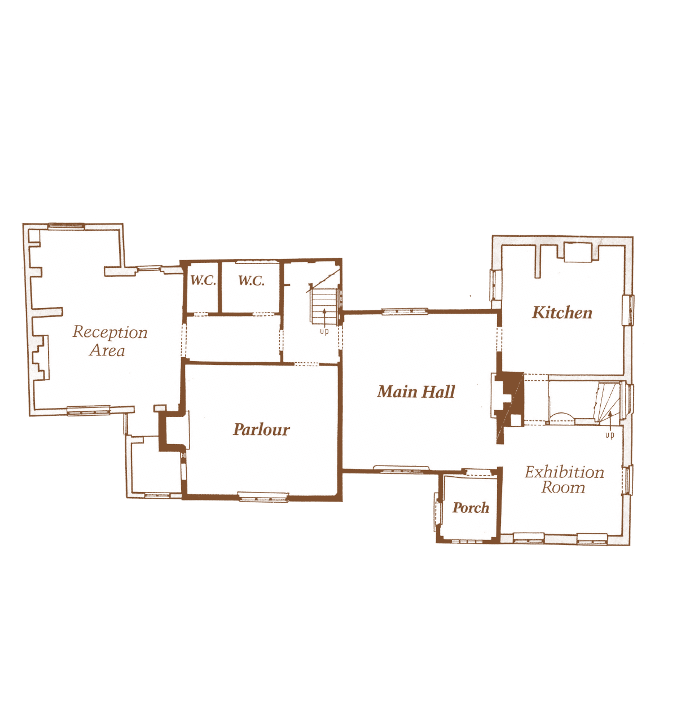
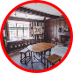
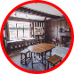
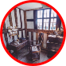
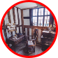
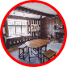
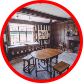
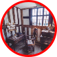
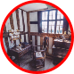

Copyright © Ford Green Hall - All rights reserved


Ford Green Road, Smallthorne, Stoke-on-Trent, ST6 1NG
fordgreenhall.museum@gmail.com
Phone 01782 537696



The Hall Chamber was originally used as a bedroom, and at the time of Hugh Ford's death in 1712 it contained 3 beds. The household at Ford Green was often a large one, so that it was necessary to make maximum use of all available space.
The Parlour Chamber is now used as a workroom for spinning and embroidery but in 1712 it was a bedroom containing 3 beds. A section of the wall has been cut away to show the original wattle and daub which was used as filling
between the timbers.
The Buttery Chamber is so called because of its position above what was once the buttery. Originally used as a bedroom, the simple bedstead is a copy of the type of beds which most of the household at Ford Green would
have slept in.
The Porch Chamber is now displayed as a study, but was also used at different periods as a dressing-room, and for storage.


The Hall was the most important room of the house Originally much of the cooking would have been carried out over the hearth in this room, and the family would also have eaten their meals here.
The Parlour was originally used as both principal bedroom and sitting-room. This arrangement was quite common in houses 'of the 16th and 17th centuries, when the parlour contained the best and most expensive items of furniture, including the best bed.
The Kitchen is in the larger brick wing added to the house in the 1730's. By this time it had become fashionable to have a separate room devoted to the cooking and food preparation. The room is furnished mainly with articles from the 18th and 19th centuries.
The Porch is a later addition, built c. 1630 - 50 when it was fashionable to add an imposing entrance to your house. It also gave added privacy and prevented draughts.
Ford Green Hall is a timber-framed yeoman’s farmhouse of 1624 with 18th century brick additions. The plans of the house shown on this page describe how the various rooms were originally used



 


 



 

{kind=link}

 

{kind=link}